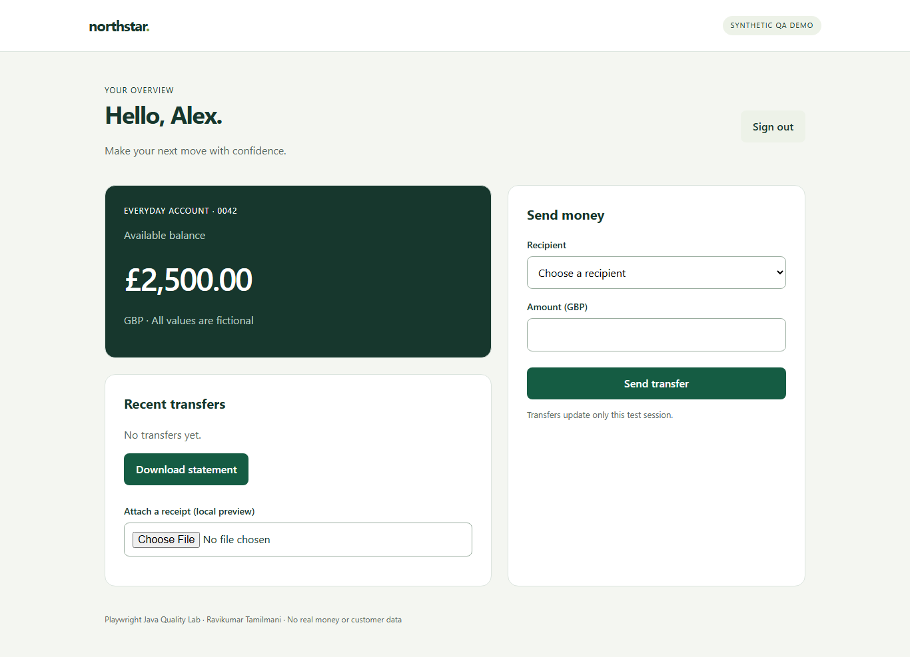

UI + API consistency

Assert the visible debit and REST transaction record. This screenshot is from the CI run.
Download transfer tracePLAYWRIGHT JAVA / EXECUTED EVIDENCE
UI and API automation against a fictional banking application. Inspect the browser state, watch a transfer, open the actual Extent report, or step through a trace.
13 tests × 3 browsers passed in CIReal Playwright recording with 200ms action slow motion. Synthetic credentials, recipient and balance.
Local Windows recording uses an existing cached Chromium executable. The matching Playwright 1.63 browser matrix was verified separately in CI.
Assert the visible debit and REST transaction record. This screenshot is from the CI run.
Download transfer trace
The assertion deliberately expects £9,999.00. The command exits nonzero and preserves useful evidence. Excluded from normal CI.
Download failure traceDownload a trace above and drop it into Microsoft Playwright Trace Viewer, or open it locally with mvn exec:java -Dexec.mainClass=com.microsoft.playwright.CLI -Dexec.args="show-trace path/to/trace.zip".
Explore action timeline, DOM snapshots, screenshots, network and console events. Java assertion failures are shown in Extent/TestNG; raw browser tracing is not a Java assertion recorder.